رؤيتنا
أن نكون المرجع الأهلي الرائد في تأهيل الكفاءات القانونية ونشر الوعي القانوني، لمجتمعٍ يعرف حقوقه ويؤدي واجباته.


جمعية أهلية مرخّصة من المركز الوطني لتنمية القطاع غير الربحي
نؤهّل الكفاءات القانونية، ونطوّر الخدمات القانونية للفئات المستفيدة، ونقرّب المعرفة القانونية من كل فرد في المجتمع؛ لأن الناس هم أصل النفع.

من نحن
انطلقت جمعية نفع القانونية من قناعة مجموعة من المختصين بأن المعرفة القانونية حقٌّ للجميع، وأن خريج القانون يحتاج إلى بيئة تحتضنه وتصقل مهاراته قبل أن يمارس المهنة.
لذلك جاءت الجمعية جسرًا يجمع بين أهل الاختصاص والخريجين الجدد من جهة، والمجتمع المحتاج إلى الوعي والخدمة القانونية من جهة أخرى؛ فتقدّم التدريب والتأهيل، وتساهم في تطوير الخدمات القانونية، وتنشر الثقافة القانونية، في إطار من النزاهة والمهنية.
وتعمل الجمعية ضمن تصنيف الخدمات القانونية والمحاماة والاستشارات القانونية، ومقرها الرئيسي مدينة بريدة، ويمتد نطاق خدماتها إلى مناطق المملكة.

قصة الشعار: أشخاص بأذرع مرفوعة تلتقي في نقطة واحدة، رمزًا للتكاتف والعون المتبادل، والنقطة الذهبية هي القيمة والأثر الذي تتركه الجمعية. وكل شخص بقوسه ونقطته يلمّح لحرف النون، أول حرف من «نفع».

إلى أين نتجه
أن نكون المرجع الأهلي الرائد في تأهيل الكفاءات القانونية ونشر الوعي القانوني، لمجتمعٍ يعرف حقوقه ويؤدي واجباته.
تقديم برامج تدريب وتأهيل وخدمات قانونية نوعية للمتخصصين وخريجي القانون والفئات المستفيدة، عبر شراكات فاعلة تسهم في تعزيز العدالة وخدمة المجتمع.
ما نسعى إليه
تهدف الجمعية إلى تحقيق الغرض الذي أُنشئت من أجله، وذلك من خلال الأهداف الآتية:
التدريب والتأهيل للمتخصصين في مجال القانون.
المساهمة بتطوير الخدمات القانونية للفئات المستفيدة.
تأهيل كفاءات قانونية تساهم في الخدمة المجتمعية.
نشر الثقافة القانونية بين أفراد المجتمع.
المصدر: اللائحة الأساسية للجمعية – المادة الخامسة.
لمن نعمل
نخدم كل من يحتاج إلى المعرفة أو الخدمة القانونية، ونحتضن من يحمل رسالة القانون.
المحامون والمستشارون والمتدربون الراغبون في تطوير مهاراتهم المهنية.
خريجو كليات وأقسام القانون في الجامعات، لتأهيلهم وتهيئتهم لسوق العمل.
من يحتاجون إلى الخدمات والاستشارات القانونية وفق سياسة الجمعية في خدمة المستفيدين.
رفع الوعي القانوني لدى أفراد المجتمع ليعرفوا حقوقهم وواجباتهم.
من روح القانون
قواعد ومبادئ راسخة نؤمن بها ونعمل على نشر الوعي بها.
العدل أساس المُلك.
حكمة مأثورة
المتهم بريء حتى تثبت إدانته.
مبدأ قانوني
لا جريمة ولا عقوبة إلا بنص.
مبدأ الشرعية الجنائية
العقد شريعة المتعاقدين.
قاعدة قانونية
الأصل براءة الذمة.
قاعدة فقهية
اعرف حقّك؛ فالوعي القانوني أول الحماية.
عبارة توعوية
ماذا يحدث في الجمعية
عقد مجلس إدارة الجمعية اجتماعًا مع سعادة الأستاذ صالح الجاسر، مساعد أمين الغرفة التجارية في بريدة، لبحث سبل التعاون وتعزيز الشراكة في خدمة المجتمع.
اقرأ الخبر كاملًاانضم إلى الجمعية العمومية، وشارك في صناعة الأثر القانوني في مجتمعك.